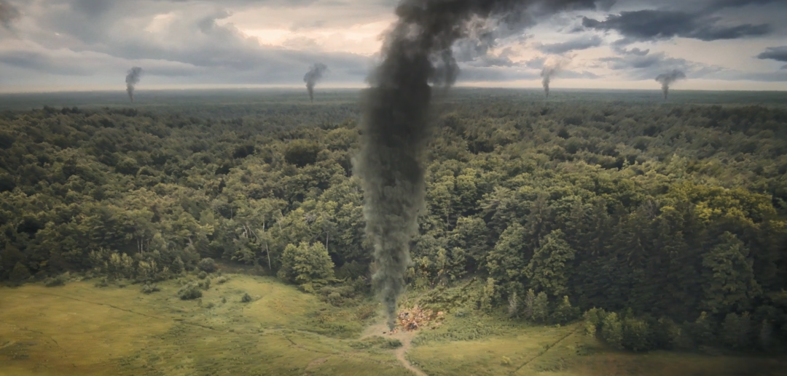
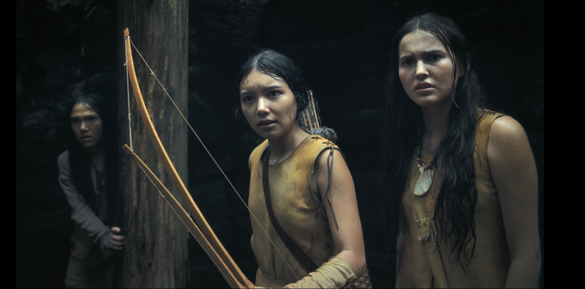
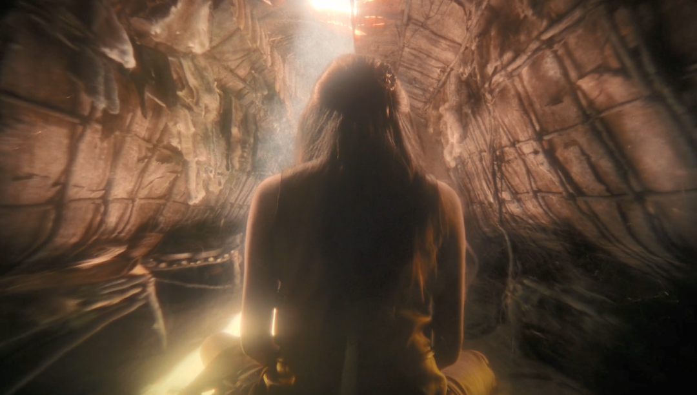

10月31日，万圣节当天，HBO Max 没有任何预告、没有预热宣传，直接上线了一部《小丑回魂》特别篇电影。30分钟，午夜上线，主打一个惊喜。

按照《小丑回魂》的设定，潘尼怀斯每隔 27 年苏醒一次，但这回它显然不打算遵守规矩。
我们一直以为德里镇的恐怖有个起点：下水道、红气球、咧嘴一笑。这部特别篇偏偏告诉你：小丑不是起点，是后来才长出来的那层皮。森林里的那个东西，比他老得多，也没耐心跟你玩气球。
《德里故事》把时间一路往前推。官方简介写得很直白：数百年前，在潘尼怀斯出现之前，三个孩子深入西部森林，在那里撞上了一个可怕的远古灵体。

斯蒂芬·金式恐怖最有效的部分：恐怖不来自怪物长什么样，而是来自孩子先于大人察觉到危险，却没人相信他们。特别篇把时间线推到潘尼怀斯诞生之前，等于把德里镇为什么会被诅咒这个问题的答案，又往前揭露了一层。观众熟悉的那个红气球小丑，在这里连背影都还没出现。

比起特别篇本身，更值得留意的是第二季的方向。《小丑回魂：欢迎来到德里镇》第二季将聚焦1935年大萧条时期，主创安迪·穆斯切蒂明确表示，不会回避那个年代可怕的文化主题。
这是一句分量不轻的表态。把恐怖故事放回真实的历史年代，意味着剧集不只想拍怪物，还想拍怪物为什么能在某个时代里活得那么舒服。
1930 那个年代的美国，经济萧条、社会撕裂、排外情绪高涨，这些背景信息本身就是德里镇最好的看点。如果第二季真顺着这条线拍下去，潘尼怀斯就不在只是一个会吃小孩的怪物，而是一面照出时代病灶的镜子。